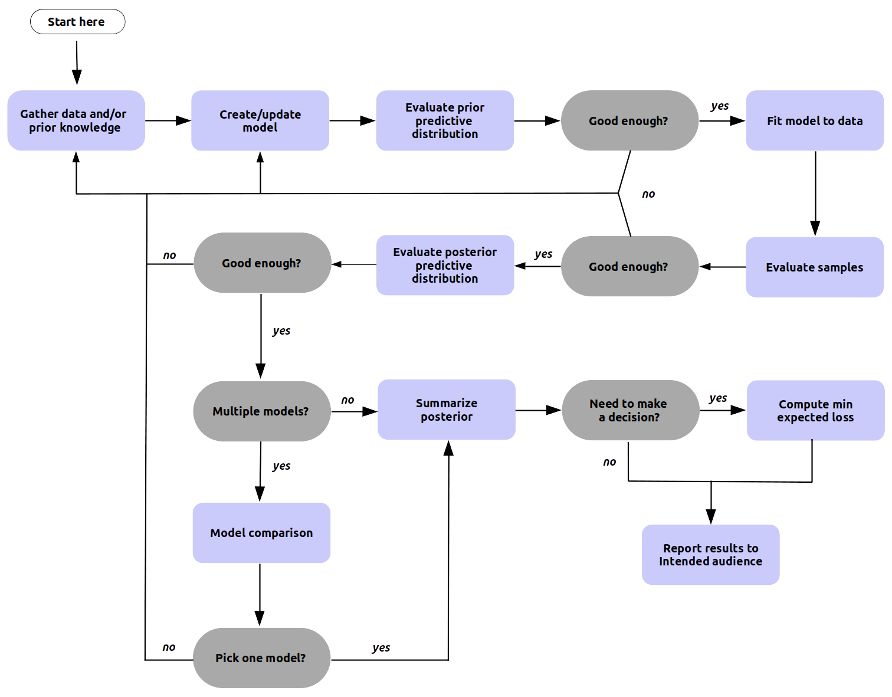
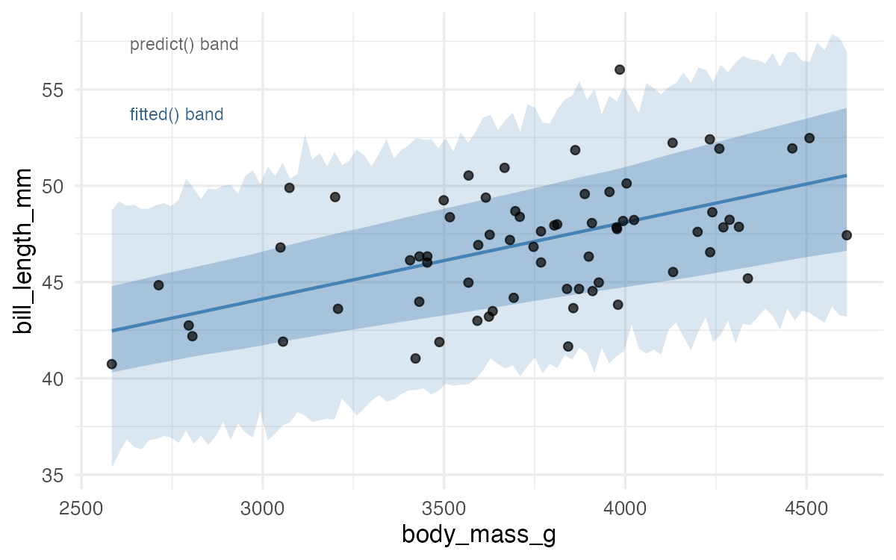
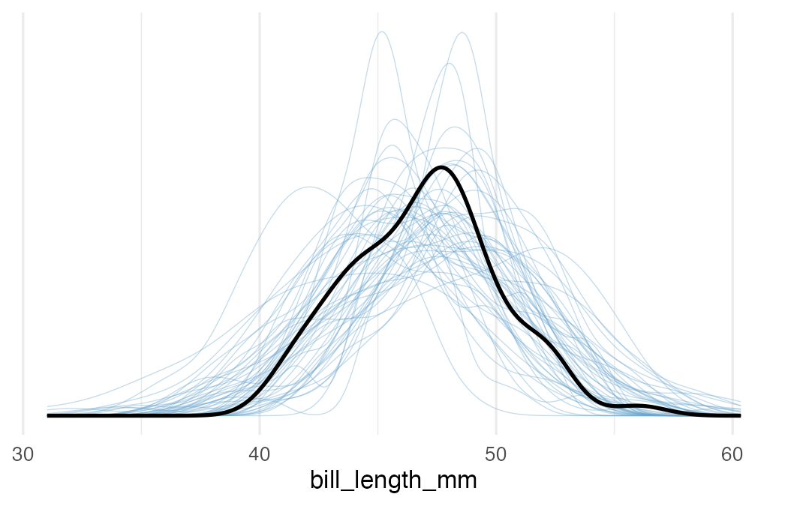

PSY504, Advanced Statistics in Psychology
Princeton University
2026-04-08
| Distribution | Notation |
|---|---|
| Likelihood | \(P(D \mid \theta)\) |
| Prior | \(P(\theta)\) |
| Prior predictive | \(P(D)\) |
| Posterior | \(P(\theta \mid D)\) |
| Posterior of expectations | \(P(\mu_i \mid D)\) |
| Posterior predictive | \(P(D_{\text{new}} \mid D)\) |
| Distribution | Notation | Alt. notation |
|---|---|---|
| Likelihood | \(P(D \mid \theta)\) | \(P(y \mid \beta, \sigma)\) |
| Prior | \(P(\theta)\) | \(P(\beta_0), P(\beta_1), P(\sigma)\) |
| Prior predictive | \(P(D)\) | \(P(\tilde{y})\) |
| Posterior | \(P(\theta \mid D)\) | \(P(\beta, \sigma \mid y)\) |
| Posterior of expectations | \(P(\mu_i \mid D)\) | \(P(\hat{y}_i \mid D)\) |
| Posterior predictive | \(P(D_{\text{new}} \mid D)\) | \(P(\tilde{y} \mid y)\) |
| Distribution | Notation | Alt. notation | In brms |
|---|---|---|---|
| Likelihood | \(P(D \mid \theta)\) | \(P(y \mid \beta, \sigma)\) | family = gaussian() |
| Prior | \(P(\theta)\) | \(P(\beta_0), P(\beta_1), P(\sigma)\) | get_prior() / prior arg |
| Prior predictive | \(P(D)\) | \(P(\tilde{y})\) | sample_prior = "only" |
| Posterior | \(P(\theta \mid D)\) | \(P(\beta, \sigma \mid y)\) | as_draws_df() |
| Posterior of expectations | \(P(\mu_i \mid D)\) | \(P(\hat{y}_i \mid D)\) | fitted() |
| Posterior predictive | \(P(D_{\text{new}} \mid D)\) | \(P(\tilde{y} \mid y)\) | predict() / pp_check() |

Figure from Martin, Kumar & Lao, Bayesian Modeling and Computation in Python (2022)
“Comparing the data to the posterior predictions of the model is a posterior predictive check. When systematic discrepancies appear that are substantively meaningful, the model should be expanded or replaced.”
Kruschke, Doing Bayesian Data Analysis, Ch. 17
“Practical Bayesian data analysis is an iterative process of model building, inference, model checking and evaluation, and model expansion.”
Gabry, Simpson, Vehtari, Betancourt & Gelman (2019)
A model doesn’t need to be true, only good enough for the question you’re asking.
fitted() vs predict()fitted() = uncertainty in the mean
“What’s the average bill length at this body mass?”
Uses only \(\beta_0 + \beta_1 x\)
predict() = uncertainty in new observations
“Where might the next penguin’s bill length fall?”
Adds a draw from \(\text{Normal}(0, \sigma)\) on top
fitted() |
predict() |
|
|---|---|---|
| Includes \(\beta\) uncertainty | Yes | Yes |
| Includes \(\sigma\) | No | Yes |
| Band width | Narrow | Wide |
| Use for | “Average at \(x\)” | “Next observation” |

“After fitting, does simulated data from the model look like real data?”
pp_check(fit1.b, ndraws = 100)

“Before seeing data, does the model make sensible predictions?”
sample_prior = "only" tells brms to ignore data entirely and just simulate from priors + likelihood.
If predictions are absurd (e.g., 500mm bills), your priors are too permissive.
Takeaway: prior predictive checks catch bad priors before you waste time fitting.
brms always has priors, whether you set them or not.
get_prior(data = chinstrap, bill_length_mm ~ 1 + body_mass_g) reveals them:
| Parameter | Default prior |
|---|---|
| \(\beta_0\) (Intercept) | Student-t(3, 49.5, 3.6) |
| \(\beta_1\) (slope) | Flat (uniform \(-\infty\) to \(\infty\)) |
| \(\sigma\) | Half-Student-t(3, 0, 3.6) |
Student-t with \(\nu = 3\) has thick tails = more permissive. As \(\nu\) grows, it approaches Normal.
The Bayesian AIC/BIC: Leave-One-Out Cross-Validation.
The idea: hide one data point, predict it from the rest, repeat for every point.
Higher ELPD (expected log predictive density) = better out-of-sample prediction.
Today you’ll work through all six distributions using the Chinstrap penguins.
fitted() and predict() ribbonspp_check() and connect it to the manual simulation from last timeloo_compare()Some questions have hidden answers you can reveal after writing your response.
Other questions are open: no provided answer.
PSY 504: Advanced Statistics